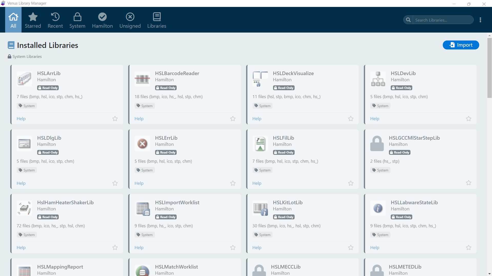
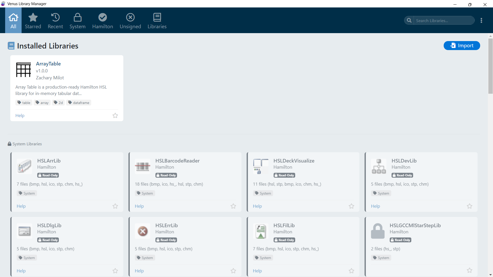

Introduction
This guide walks you through the initial setup of Library Manager for Venus 6 and the most common workflows you will perform when managing Hamilton VENUS libraries.
Installation
Library Manager for Venus 6 is distributed as part of your Hamilton VENUS installation or as a standalone download. No separate installer is required - the application runs directly from its directory.
Directory Structure
The application directory contains:
| Item | Description |
|---|---|
package.json | NW.js application manifest and Node.js dependency declarations |
cli.js | Command-line interface entry point (all CLI commands) |
cli-schema.json | JSON Schema for package specification files |
cli-spec-example.json | Example package specification file |
html/ | GUI application HTML, CSS, and JavaScript files |
db/ | Application database: settings, system library definitions, baseline hashes |
docs/ | Technical reference documentation |
Launching the Application
Graphical User Interface
Double-click the Library Manager for Venus 6 application shortcut or executable. The main window opens displaying your installed libraries as visual cards.

After importing a signed library package, the main window shows the newly installed library card with its metadata, signature badge, and organization icon:

Command-Line Interface
Open a terminal (Command Prompt or PowerShell) and navigate to the Library Manager for Venus 6 directory:
cd "C:\Users\admin\Documents\GitHub\Library Manager" node cli.js help
This displays the full list of available CLI commands and options. See CLI Reference for complete documentation.
First-Time Setup
User Data Directory
Library Manager for Venus 6 stores its working data (installed library records, group assignments, navigation tree) in a user data directory. By default, this is located at:
C:\Program Files (x86)\HAMILTON\Library\LibraryManagerForVenus6
This directory is created automatically on first run and seeded with empty JSON files for each data collection (installed_libs.json, groups.json, tree.json, links.json).
You can change the user data directory location in the application settings or by passing --db-path on the CLI.
Package Store
Every imported .hxlibpkg file is automatically cached in the package store for future repair and version rollback. The default location is:
C:\Program Files (x86)\HAMILTON\Library\LibraryPackages
Packages are organized into subdirectories by library name, with timestamped filenames for version tracking. See Version Rollback for details.
Basic Workflows
Import a Library Package
- Obtain a
.hxlibpkgfile from a library author or export - In the GUI: Use the Import tab and select the file, or drag-and-drop
- Review the pre-install preview (metadata, file lists, install paths)
- Confirm the import
- Library files are extracted to
HAMILTON\Library\<LibraryName> - Demo method files are extracted to
HAMILTON\Methods\Library Demo Methods\<LibraryName>
From the CLI:
node cli.js import-lib --file MyLibrary.hxlibpkg
Export a Library
- In the GUI: Open the library detail modal and click Export Library
- Choose Export Single Library for a
.hxlibpkg, or Export with All Dependencies for a.hxlibarchthat includes all required dependency libraries - Choose a save location - the current on-disk files are packaged into the selected format
From the CLI:
node cli.js export-lib --name "MyLibrary" --output MyLibrary.hxlibpkg
Create a New Package
- In the GUI: Use the Library Packager to select source files and fill in metadata
- Or create a JSON spec file and use the CLI:
node cli.js create-package --spec MyLib.spec.json --output MyLib.hxlibpkg
See Creating Packages and Package Spec JSON Schema for full details.
Next Steps
- GUI Overview - Learn the graphical user interface
- Package Formats - Understand the package file structure
- CLI Reference - Use the command-line interface
- Integrity Verification - Verify library file integrity